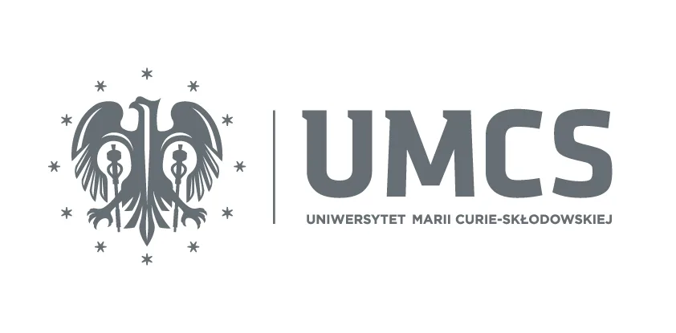
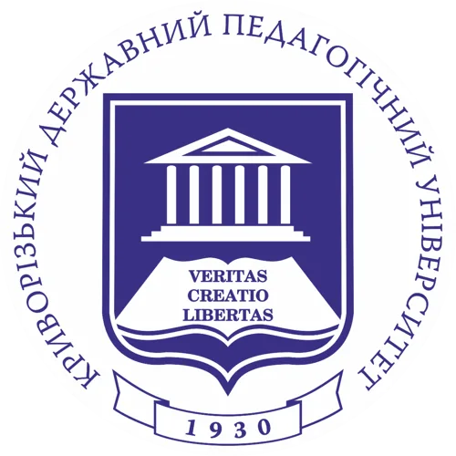
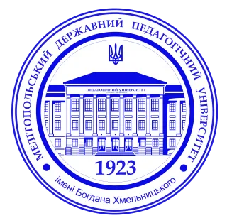
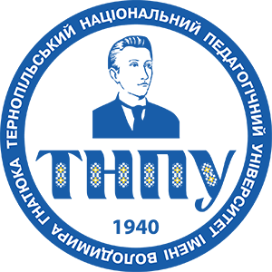

Партнери
У проєкті беруть участь університети з України, Польщі та Швеції
Örebro University (Швеція)
Maria Curie-Skłodowska University in Lublin (Польща)
Криворізький Державний Педагогічний Університет (Україна)
Мелітопольський державний педагогічний університет імені Богдана Хмельницького (Україна)
Тернопільський національний педагогічний університет імені Володимира Гнатюка (Україна)